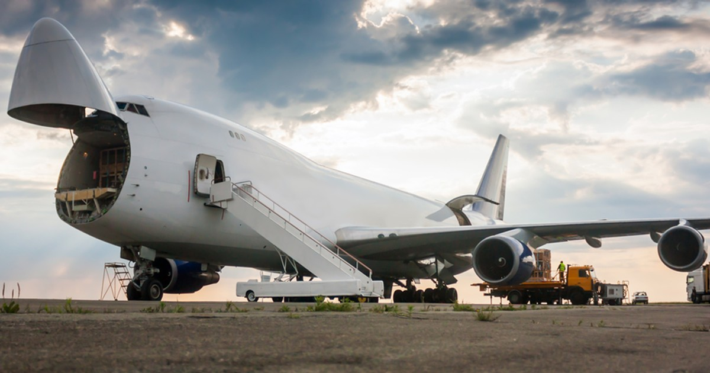
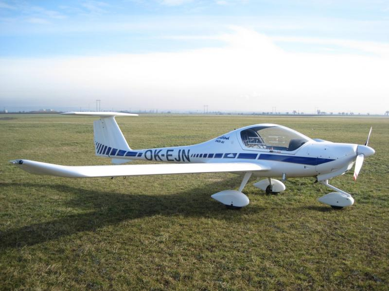
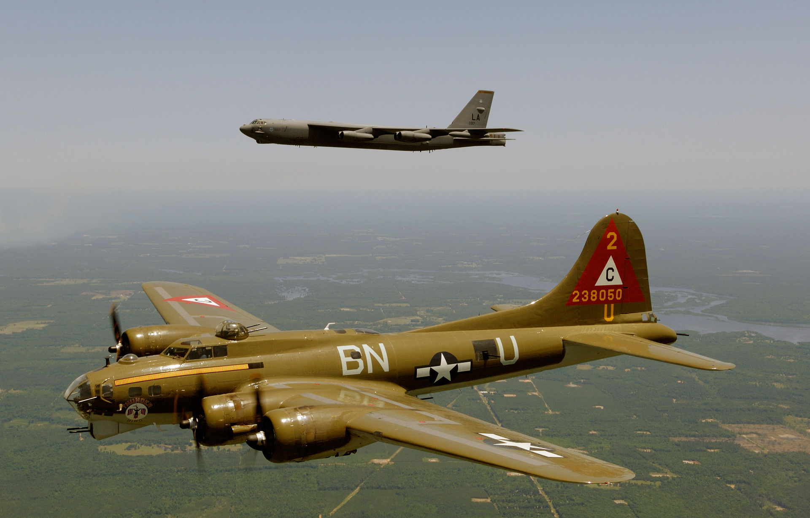
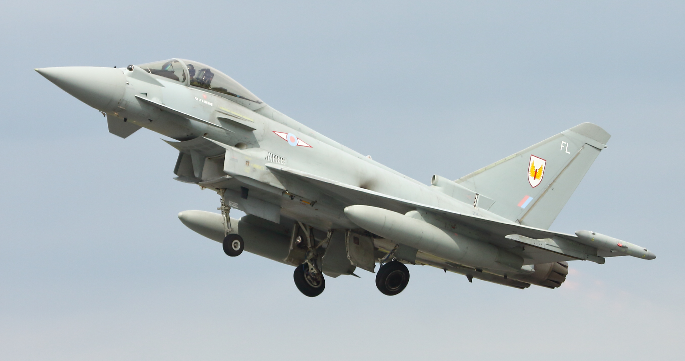
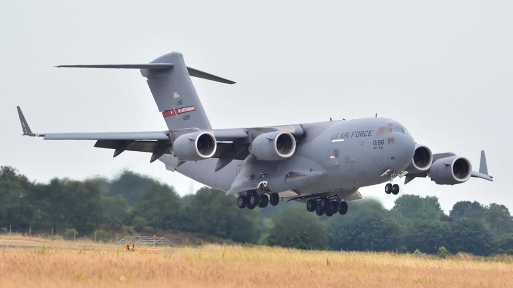
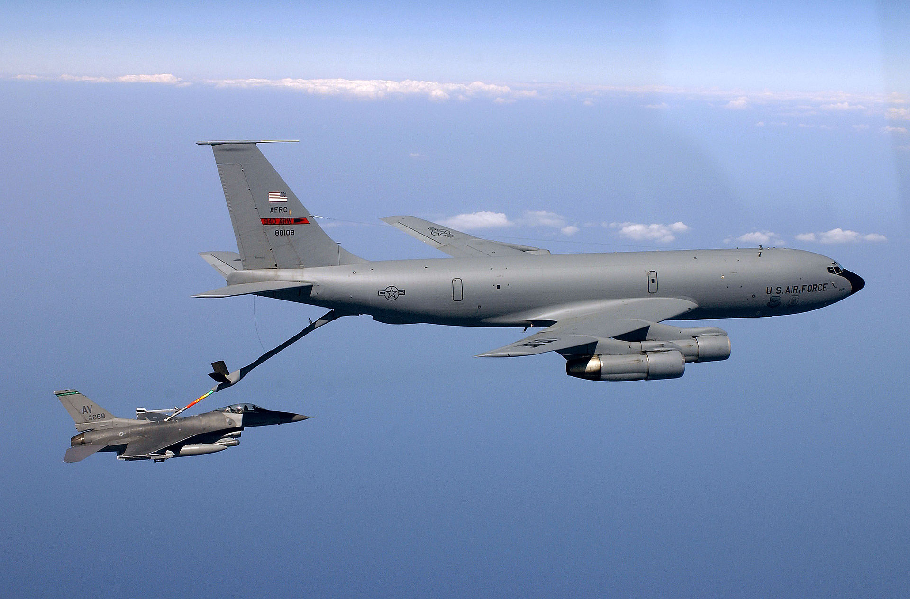

Samoloty wyróżniają się na różne typy, wszystkie z innymi zadaniami
Samoloty używane są w wojsku, w transporcie ludzi i towarów lub nawet na zwalczanie pożarów.

Samoloty pasażerskie używane są do transportu ludzi przez długie dystanse dosyć szybko. Jest to najbezpieczniejsza forma transportu. Samoloty takie mają dużo miejsc, największy z nich mający aż do 550 miejsc.
Pierwszy lot pasażerski odbył się 1 stycznia 1914 roku i został zrealizowany przez amerykańską firmę St. Petersburg-Tampa Airboat Line.

Samoloty cargo to specjalistyczne samoloty używane do transportu ciężkich ładunków. Największy samolot cargo to był An-225 Mrija, który został zniszczony skutkiem wojny rosyjsko-ukraińskiej.
Takie samoloty transportują nawet części do innych samolotów.

Samoloty ultralekkie są używane do lotów amatorskich. Ważą mniej niż 450kg (jeżeli lądują na lądzie) lub mniej niż 495 (jeżeli lądują na wodzie). Te samoloty mają zazwyczaj 1-2 miejsc.
Rekordowy samolot Carbon Cub SS LSA wykonał lądowanie, w czasie którego zatrzymał się po przebyciu 21 m, a następnie wystartował wykorzystując jedynie 19,5 m pasa startowego.
Samoloty wojskowe dzielą się na różne typy:

Cel tych samolotów to niszczenie obiektów naziemnych nieprzyjaciela za pomocą bomb.
Dzielą się na: lekkie, średnie i ciężkie.

Samoloty bojowe przeznaczone przede wszystkim do zwalczania innych statków powietrznych i wywalczenia przewagi powietrznej, jak i obrony własnych samolotów o innym przeznaczeniu.
Pierwsze myśliwce zostały opracowane podczas I wojny światowej w odpowiedzi na pojawienie się sterowców i samolotów rozpoznawczych wroga, wypełniających misje rozpoznawcze i bombowe.

Wojskowe samoloty transportowe przeznaczone są do powietrznych przewozów wojsk i ładunków oraz wysadzania desantów powietrznych. W zależności od wagi przewożonych ładunków i zasięgu dzielą się na ciężkie, średnie i lekkie.
Są wyposażone w odpowiednio przystosowaną ładownię, osobową, osobowo- towarową lub towarową. Wymiary ładowni często dostosowuje się do określonego rodzaju sprzętu wojskowego.

Tankowce (także nazywane: samolot-zbiornikowiec, samolot-cysterna) są wyposażone w odpowiednio przystosowaną ładownię, osobową, osobowo-towarową lub towarową. Wymiary ładowni często dostosowuje się do określonego rodzaju sprzętu wojskowego
Samoloty-cysterny zwykle są wersjami pochodnymi dużych samolotów transportowych lub bombowców, wyposażonych w odpowiednio pojemne zbiorniki paliwa i instalację do uzupełniania paliwa w powietrzu.